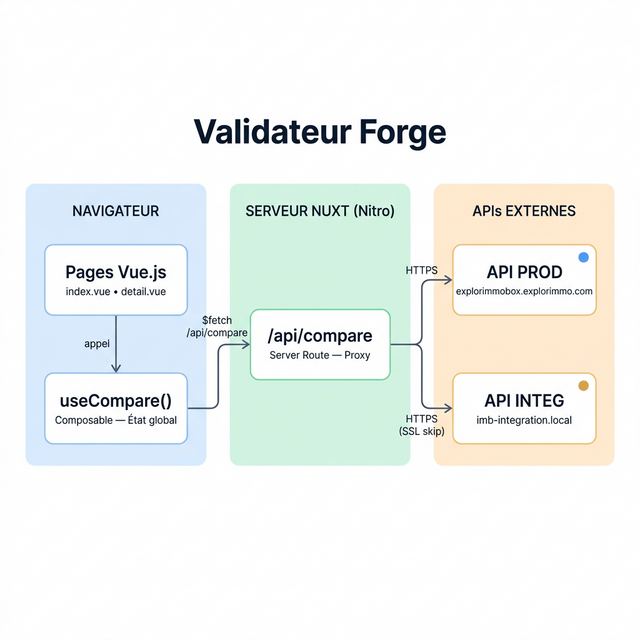

🛡️ Validateur Forge — Documentation Projet
Dernière mise à jour : 2 mars 2026 | Statut : 🟢 En développement actif
📋 Sommaire
- Contexte & Objectif
- Stack technique
- Architecture applicative
- Flux utilisateur
- API — Route serveur proxy
- Grille de comparaison
- Gestion d'état & navigation
- Lancer le projet en local
- Évolutions prévues
📌 Contexte & Objectif
Le Validateur Forge est un outil interne de validation et comparaison des
annonces immobilières entre deux environnements :
| Environnement |
Rôle |
URL de base |
| PROD (Immobox) |
Données de production |
explorimmobox.explorimmo.com |
| INTEG (Forge) |
Données d'intégration |
imb-integration.vip.adencf.local |
⚠️ IMPORTANT — L'outil permet de détecter rapidement les écarts de données
entre PROD et INTEG pour une même annonce, en comparant champ par champ les valeurs retournées par les APIs.
Problèmes résolus
- CORS : les APIs Immobox n'autorisent pas les appels cross-origin depuis le navigateur →
résolu via un proxy serveur Nuxt
- Certificats SSL auto-signés : l'environnement INTEG utilise un domaine
.local
avec certificat auto-signé → géré côté serveur (NODE_TLS_REJECT_UNAUTHORIZED)
🛠️ Stack technique
| Composant |
Technologie |
Version |
| Framework full-stack |
Nuxt 3 (Vue.js) |
^4.3.1 |
| Rendu réactif |
Vue 3 |
^3.5.28 |
| Routage |
Vue Router |
^4.6.4 |
| Styling |
Tailwind CSS |
via @nuxtjs/tailwindcss ^6.14.0 |
| Langage |
TypeScript |
— |
| Proxy API |
Nitro Server Routes |
intégré à Nuxt |
🏗️ Architecture applicative
Arborescence des fichiers
Validateur Forge/
├── app/
│ ├── app.vue # Layout global (header + NuxtPage)
│ ├── pages/
│ │ ├── index.vue # Page d'accueil — formulaire + liste annonces
│ │ └── detail.vue # Page détail — comparaison champ par champ
│ ├── assets/css/tailwind.css # Configuration Tailwind
│ └── composables/
│ └── useCompare.ts # Composable partagé — état global + appels API
├── server/
│ └── api/
│ └── compare.ts # Route serveur proxy (contourne CORS + SSL)
├── public/
│ └── logos/
│ ├── fi.svg # Logo Figaro Immobilier
│ └── plf.svg # Logo Propriétés Le Figaro
├── nuxt.config.ts
└── package.json
Diagramme d'architecture

ℹ️ Flux résumé : Page Vue → useCompare() → $fetch("/api/compare") →
Server Route Nitro → API externe PROD/INTEG → Réponse JSON → Affichage
🔄 Flux utilisateur
- Page d'accueil (
/) : l'utilisateur renseigne un Partenaire et
un Code Agence
- (Optionnel) Sélection du portail : Tous / FI (Figaro Immobilier)
/ PLF (Propriétés Le Figaro)
- Clic Rechercher → appel API PROD + INTEG en parallèle → affichage en 2 colonnes
- Clic sur une annonce → navigation vers la page détail (
/detail?ref=...)
- Retour à la liste → les filtres de recherche sont automatiquement
restaurés et les résultats toujours affichés
Détail des écrans
🏠 Page d'accueil (/)
- Formulaire de recherche :
- Partenaire (obligatoire) — select parmi : Apimo, Hektor, Immo-Facile, La
Boite Immo, Netty, Periimmo, Poliris, Rodacom, Ubiflow
- Code Agence (obligatoire) — input texte libre
- Réf Client (optionnel) — si renseignée, navigation directe vers le détail
- Portail (optionnel) — boutons segmentés : Tous / FI / PLF
- Export CSV — bouton visible dès qu'il y a des résultats, télécharge la liste
complète des annonces avec référence, type, ville, prix, statut et présence PROD/INTEG
- Résultats en 2 colonnes : PROD (bleu) et INTEG (ambre)
- Matching automatique des annonces par référence (
property.reference)
- Pastille de statut par annonce : ✅ ISO (vert) ou nombre de différences (rouge)
- Liens JSON pour ouvrir les URLs API brutes dans un nouvel onglet
📄 Page détail (/detail?ref=...)
- En-tête : titre, référence, partenaire, code agence, logo du portail (FI/PLF)
- Résumé statistique dynamique : compteurs Identiques / Différences (toujours visibles) +
Manque INTEG (🟠 ambre) / Manque PROD (🔵 bleu ciel) / Non transmises (affichés uniquement si > 0)
- Bandeau de statut : ✅ Succès (vert) si 0 diff + 0 manquante, ⚠️ Attention (ambre) si 0 diff
mais des manquantes
- Galerie photos PROD vs INTEG côte à côte (dépliable)
- Tableaux de comparaison par catégorie (voir section Grille)
- Exports :
- Imprimer PDF — ouvre la boîte d'impression du navigateur avec styles dédiés (fond
blanc, masquage des éléments interactifs)
- Export comparaison JSON — télécharge un fichier JSON structuré contenant le résumé
statistique et le détail champ par champ avec statuts
- Bouton "Retour à la liste" avec restauration automatique des filtres
⚙️ API — Route serveur proxy
La route server/api/compare.ts sert de proxy backend entre le navigateur et les
APIs Immobox.
Paramètres d'appel
| Paramètre |
Type |
Requis |
Description |
partenaire |
string |
✅ |
Nom du partenaire (ex : Netty, Apimo) |
codeAgence |
string |
✅ |
Identifiant de l'agence |
refClient |
string |
❌ |
Référence client (wildcard * si vide) |
mediaId |
string |
❌ |
Portail : 1 = FI, 9 = PLF |
env |
string |
✅ |
PROD ou INTEG |
Construction de l'URL API
{baseUrl}&filters[property.gateway_code]={codeAgence}_*&filters[status]=3&start=0&limit=1000
- Si
mediaId est renseigné → ajout de &filters[media_id]={mediaId}
- Le filtre
gateway_code utilise le pattern {codeAgence}_* (wildcard) pour récupérer
toutes les annonces de l'agence
Filtre Portail de publication
| Bouton |
Valeur mediaId |
Effet |
| Tous (défaut) |
vide |
Aucun filtre portail |
| FI |
1 |
Filtre Figaro Immobilier |
| PLF |
9 |
Filtre Propriétés Le Figaro |
Gestion SSL pour INTEG
Pour l'environnement INTEG (domaine .local avec certificat auto-signé), la variable
NODE_TLS_REJECT_UNAUTHORIZED est temporairement mise à 0 pendant l'appel, puis
restaurée.
📊 Grille de comparaison
La page détail compare les annonces PROD vs INTEG sur les catégories suivantes :
| Catégorie |
Champs comparés |
| 🏷️ Identification |
ID, Code passerelle, Passerelle, Réf. mandat |
| 📍 Localisation |
Ville, Code Postal, Quartier |
| 🏠 Caractéristiques |
Type transaction, Type/Famille de bien, Surface, Terrain, Pièces, Chambres, SdB, Confort, Exposition,
Visite virtuelle, Copropriété, État |
| 📝 Descriptif |
Description complète |
| ⚡ DPE |
Date DPE, Consommation énergie, Classe énergie, Émission GES, Classe GES |
| 👤 Contact |
Email, Tél. négociateur, Téléphone, Nom contact |
| 💰 Financier |
Prix, Honoraires, Prix nous consulter, Taxe foncière, Charge honoraires |
| 📷 Médias |
Nombre de photos, Vidéo |
Statuts de comparaison
| Statut |
Couleur |
Signification |
| OK |
🟢 Vert |
Valeurs identiques (comparaison insensible à la casse, trim) |
| DIFF |
🔴 Rouge |
Valeurs différentes |
| MANQUE INTEG |
🟠 Ambre |
Donnée présente en PROD mais absente en INTEG — potentiel dysfonctionnement |
| MANQUE PROD |
🔵 Bleu ciel |
Donnée présente en INTEG mais absente en PROD — potentiel dysfonctionnement |
| N/A |
⚪ Gris |
Donnée absente des deux côtés (non transmise par la source) |
🔗 Gestion d'état & navigation
L'état applicatif est géré via le composable useCompare() qui utilise useState de Nuxt
(état global partagé côté client).
Données persistées entre pages
| Donnée |
Clé useState |
Description |
| Résultats PROD |
compare-prodData |
Réponse brute API PROD |
| Résultats INTEG |
compare-integData |
Réponse brute API INTEG |
| Paramètres de recherche |
compare-searchParams |
Partenaire, Code Agence, Réf Client, Portail |
| Référence sélectionnée |
compare-selectedRef |
Référence de l'annonce en cours de consultation |
💡 Astuce — Grâce à la persistance des searchParams, l'utilisateur retrouve ses
filtres de recherche intacts lorsqu'il revient à la liste depuis la page détail — aucun rechargement API
n'est nécessaire.
Navigation entre pages
| Action |
De → Vers |
Mécanisme |
| Clic sur une annonce |
Accueil → Détail |
router.push("/detail?ref=...") |
| Retour à la liste |
Détail → Accueil |
router.push("/") + restauration des filtres depuis searchParams |
| Réf client renseignée |
Accueil → Détail |
Navigation directe vers l'annonce correspondante |
🚀 Lancer le projet en local
# Installer les dépendances
npm install
# Démarrer le serveur de développement
npm run dev
L'application est accessible sur http://localhost:3000.
ℹ️ Pré-requis : Node.js 20+ installé. L'environnement INTEG nécessite un accès au réseau
interne pour joindre le domaine .local.
📋 Évolutions prévues
| Priorité |
Fonctionnalité |
Statut |
| ✅ |
Export PDF de la page détail (impression navigateur) |
Terminé |
| ✅ |
Export JSON du résultat de comparaison (page détail) |
Terminé |
| ✅ |
Export CSV de la liste des annonces (page accueil) |
Terminé |
| 🔵 |
Stratégie de déploiement/hébergement |
À définir |